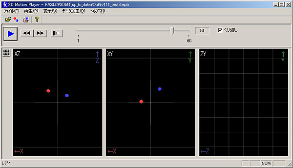
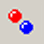
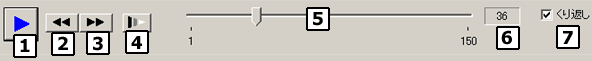
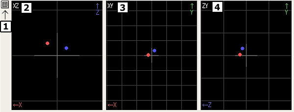

| メイン画面 |
|
全体イメージ

|
メニュー
|
|
ファイル
開く 既存のモーショファイル（*.mpb）を読み込みます。ファイル選択ダイアログが表示されますので、任意のファイルを選択してください。
また、ファイルをメインウィンドウにドラッグすることでファイルを開くことも可能です。名前を付けて保存 現在のデータを別名のモーショファイルに保存します。保存ダイアログが表示されますので、任意のファイル名を付けてください。 アプリケーションの終了 アプリケーションを終了します。
再生
コントロールフォームでも同じ操作ができます。
スタート／ストップ 再生のスタート／ストップを行います。 先頭に 先頭フレームに移動します。 末尾に 末尾フレームに移動します。 次フレーム 次のフレームに移動します。 前フレーム 前のフレームに移動します。 再生速度 再生速度設定ダイアログが表示されます。 くり返し 再生のくり返し設定を切り替えます。
表示
マーカ情報 マーカ情報表示ダイアログが開きます。 ３Ｄ表示設定 ３Ｄ表示設定ダイアログが開きます。 ツールバー ツールバーの表示、非表示。 ステータスバー ステータスバーの表示、非表示。
データ加工
トラッキング 現在のモーションデータに対しトラッキング（追跡）処理を行います。詳しくはデータ加工のページをご覧ください。 スタビライズ 現在のモーションデータに対しスタビライズ（ブレ補正）処理を行います。詳しくはデータ加工のページをご覧ください。 加工前のマーカを表示 加工前のマーカの動きを同時に表示します。詳しくはデータ加工のページをご覧ください。 加工前に戻す モーションデータを加工前の状態に戻します。
ヘルプ
目次 ヘルプファイル（ＨＴＭＬ）の表示。 バージョン情報の表示。
|
ツールバー
|
|
ファイルを開く 既存のモーショファイル（*.mpb）を読み込みます。ファイル選択ダイアログが表示されますので、任意のファイルを選択してください。
また、ファイルをメインウィンドウにドラッグすることでファイルを開くことも可能です。 マーカー情報 マーカ情報表示ダイアログが開きます。 ２Ｄイメージダイアログ ステレオラベリングカメラで取得したラベリングイメージを出力する２Ｄイメージダイアログの表示、非表示。 3DMotionTracker のバージョン情報 バージョン情報の表示。
|
コントロールフォーム
|
|

モーションの再生に関わる操作を行います。
本ソフトでは１秒に３０回（フレーム）キャプチャしたモーションデータをフレーム単位で再生・表示します。
再生スタートと再生ストップを交互に行います。
先頭フレームに移動します。
末尾フレームに移動します。
再生速度設定ダイアログが表示されます。再生速度は８段階で変更可能です。
再生をスタートすると、表示するフレームに対応して自動的にスライダーが動きます。
マウスでつまみをドラッグすることで任意のフレームに移動することが可能です。また、下記のキーでフレームを移動することも可能です。
Ctrl + ← … 前フレームに移動
Ctrl + → … 次フレームに移動
現在再生中のフレーム番号を表示します。
チェックしていると最終フレームまで再生した後、また先頭に戻って再生を行います。チェックをはずしている場合は最終フレームで再生を終了します。
|
３Ｄモニターフォーム
|
|

３次元化されたマーカの位置を表示します。
マーカの色付けおよび形状は「３Ｄ Ｍｏｔｉｏｎ Ｔｒａｃｋｅｒ」で設定した内容と同じになります。
白い十字は原点（0,0,0）を表します。
３Ｄ表示設定ダイアログを表示します。
ＸＹ座標系のみの表示を行います。上または下から見たイメージです。
ＸＺ座標系のみの表示を行います。前からまたは後ろから見たイメージです。
ＹＺ座標系のみの表示を行います。左または右から見たイメージです。
|
|
Copyright (C) 2001 CyVerse
Corp.
|